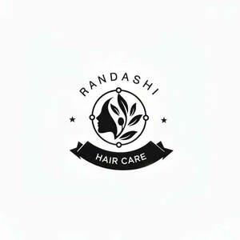

Trade Mark Journal No.2025/049 5 December 2025
UK00004299288 23 November 2025 (3)

- Class 3
- Hair shampoo; Hair shampoos; Shampoo; Hair lotion; Hair conditioner; Non-medicated hair shampoos; Shampoos for human hair; Hair lotions; Hair moisturizers; Dandruff shampoo; Hair moisturisers; Hair rinses; Hair gel; Hair pomades; Baby hair conditioner; Hair conditioners; Hair styling lotions; Hair relaxers; Hair bleach; Hair texturizers; Hair mousse; Hair serums; Hair mascara; Hair sprays; Hair spray; Hair cosmetics; Hair gels; Hair balm; Hair styling gel; Hair conditioner bars; Hair moisturising conditioners; Hair bleaches; Hair dye; Hair rinses [for cosmetic use]; Hair emollients; Colouring lotions for the hair; Shampoos; Hair oils; Hair colourants; Hair lighteners; Hair creams; Hair balms; Dyes for the hair; Hair dyes; Hair balsam; Styling sprays for the hair; Hair mousses; Hair rinses [shampoo-conditioners]; Hair tonics; Baby shampoo mousse; Hair styling gels; Styling gels for the hair; Hair cream; Hair tonic; Hair styling spray; Mousses [toiletries] for use in styling the hair; Hair powder; Hair colorants; Hair wax; Hair nourishers; Cosmetic hair lotions; Hair care lotions; Hair oil; Hair liquid; Oils for hair conditioning; Hair conditioners for babies; Hair and body wash; Non-medicated hair lotions; Conditioners for treating the hair; Baby shampoo; Carpet shampoo; Cosmetic preparations for the hair and scalp; Hair colouring; Hair lacquer; Hair styling waxes; Hair tonic [for cosmetic use]; Hair neutralizers; Hair lacquers; Wax treatments for the hair; Hair liquids; Hair care serums; Hair color; Hair tonics [for cosmetic use]; Tints for the hair; Dry shampoos; Conditioners for use on the hair; Gels for fixing hair; Non-medicated balm for hair; Hair tonic [non-medicated]; Hair masks; Hair colour removers; Colour removers for the hair; Hair strengthening treatment lotions; Hair color removers; Cosmetics for the use on the hair; Hair colouring and dyes; Hair protection lotions.
Tina Wei